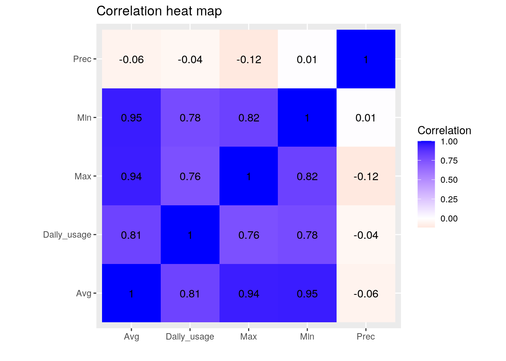
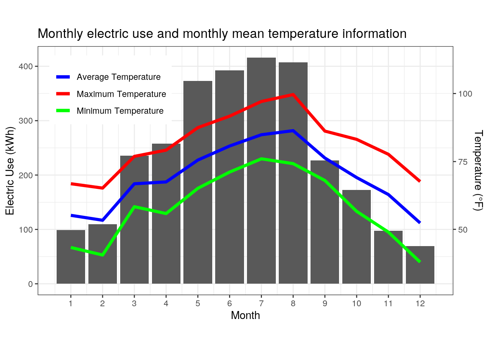
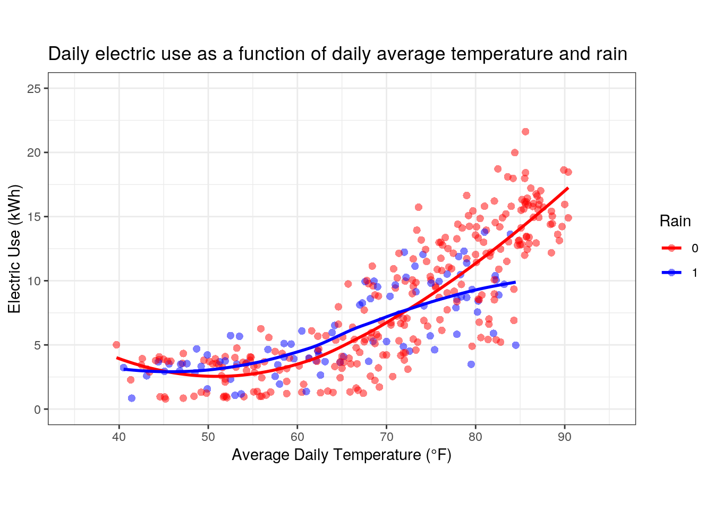
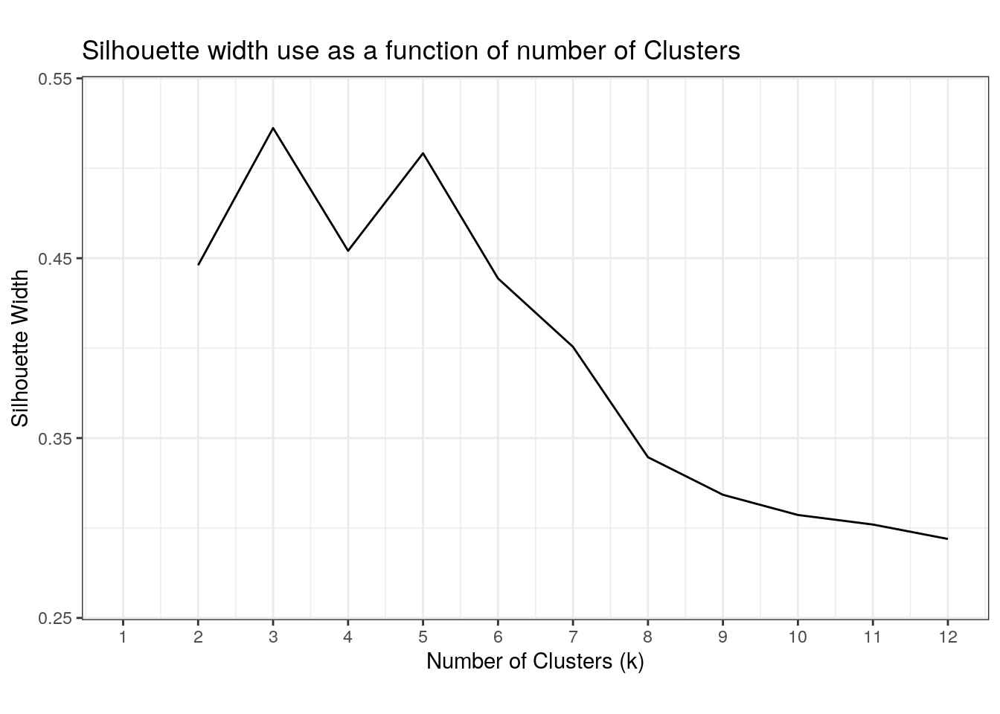
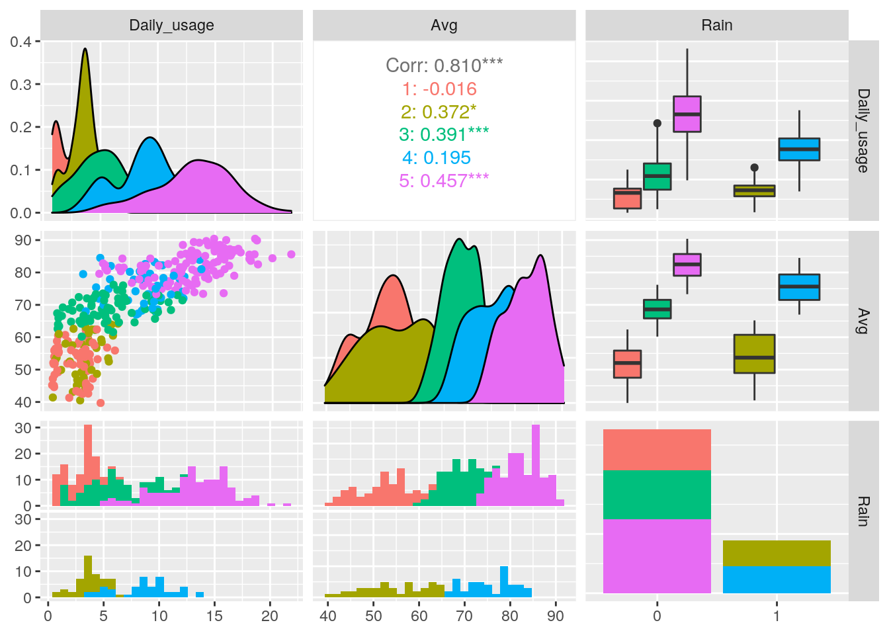
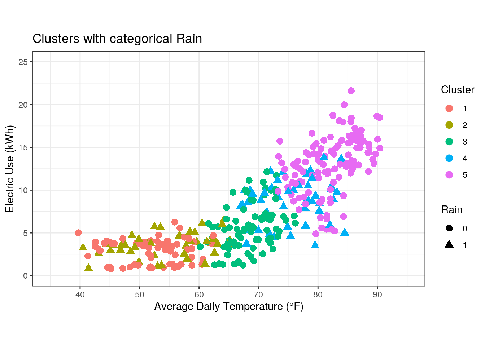
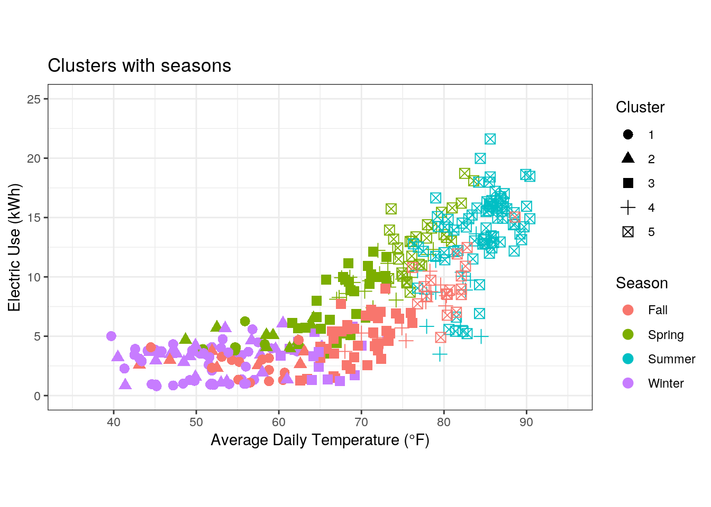
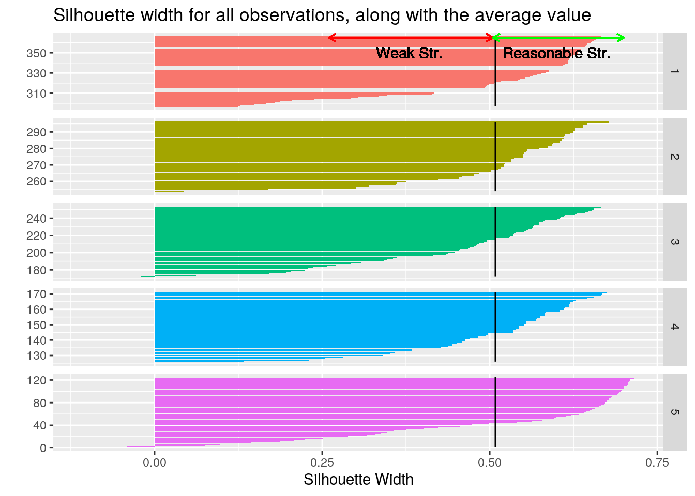

It is generally agreed that weather, and particularly temperature, affect our residential electricity usage. For example, residents of hot regions generally observe higher electricity bills in the summer, which is driven by increased demand for cooling. In this report, we will examine this association between daily electric consumption and weather conditions in detail. Particularly, we will look at the effects of temperature and rain on daily electric consumption. For this purpose, I selected two data sets: (1) my electricity usage data in Austin for 2020 and (2) weather conditions in Austin for 2020. The electricity usage data was obtained from the City of Austin Utilities Online website. Anyone can access and download their electricity usage data between any two dates in csv format; a glimpse of the data is shown below. The variables that are particularly of interest to us are DATE and USAGE in kWh. Note that by default, the electricity usage is not provided per, day but rather in 15 minute intervals, as shown in columns START TIME and END TIME.
# Load packages
library(tidyverse)
library(kableExtra)
library(cluster)
# Read electricity data
electricity <- read_csv("Electricity_Data.csv")
glimpse(electricity)## Rows: 35,136
## Columns: 5
## $ TYPE <chr> "Electric usage", "Electric usage", "Electric usage", "E…
## $ DATE <chr> "1/1/2020", "1/1/2020", "1/1/2020", "1/1/2020", "1/1/202…
## $ `START TIME` <time> 00:00:00, 00:15:00, 00:30:00, 00:45:00, 01:00:00, 01:15…
## $ `END TIME` <time> 00:14:00, 00:29:00, 00:44:00, 00:59:00, 01:14:00, 01:29…
## $ USAGE <dbl> 0.00, 0.02, 0.03, 0.00, 0.00, 0.00, 0.02, 0.03, 0.00, 0.…The second data set was obtained from the Weather Underground website (https://www.wunderground.com/), and includes information such as maximum, average, and minimum temperatures in °F and total precipitation in inches for each day in 2020. The first column is the day of the month (1 to 31), and then there are 48 additional columns which include the weather information for each month (4 variables x 12 months = 48 columns). A glimpse of the first 13 columns is shown below; it is clear that the data is in very wide format. The two questions that we will explore in this report are: (1) does the electric consumption increase with temperature, and (2) does the electric consumption decrease on hot rainy days. I generally observe that when it rains, it “feels cooler” and I tend to turn off the air conditioner (which really drives my electric use) even if it is a hot day; so we will explore these questions in this report.
# Read weather Data
weather <- read_csv("Weather_Data.csv")
dim(weather)## [1] 31 49weather %>% select(1:13) %>% glimpse()## Rows: 31
## Columns: 13
## $ Day <dbl> 1, 2, 3, 4, 5, 6, 7, 8, 9, 10, 11, 12, 13, 14, 15, 16, 17, 1…
## $ Jan_Max <dbl> 57, 61, 66, 71, 74, 75, 68, 71, 78, 78, 59, 63, 61, 76, 82, …
## $ Jan_Avg <dbl> 54.0, 53.0, 53.7, 51.8, 57.0, 55.5, 49.2, 52.0, 69.2, 70.0, …
## $ Jan_Min <dbl> 50, 41, 40, 33, 39, 35, 31, 26, 63, 58, 35, 28, 47, 60, 66, …
## $ Jan_Prec <dbl> 0.00, 0.01, 0.01, 0.00, 0.00, 0.00, 0.00, 0.00, 0.00, 0.00, …
## $ Feb_Max <dbl> 74, 77, 73, 77, 46, 55, 75, 69, 74, 72, 48, 58, 53, 58, 65, …
## $ Feb_Avg <dbl> 51.5, 56.3, 65.2, 64.8, 39.7, 40.5, 53.0, 55.5, 68.9, 59.6, …
## $ Feb_Min <dbl> 34, 34, 55, 47, 34, 32, 31, 37, 61, 48, 44, 41, 35, 30, 31, …
## $ Feb_Prec <dbl> 0.00, 0.00, 0.00, 0.00, 0.00, 0.02, 0.00, 0.00, 0.00, 0.03, …
## $ Mar_Max <dbl> 77, 77, 75, 68, 74, 69, 63, 76, 69, 80, 83, 86, 83, 83, 71, …
## $ Mar_Avg <dbl> 64.6, 69.1, 67.0, 62.4, 58.5, 55.9, 50.8, 58.3, 66.2, 67.3, …
## $ Mar_Min <dbl> 55, 64, 60, 54, 49, 43, 40, 41, 64, 58, 64, 67, 68, 71, 60, …
## $ Mar_Prec <dbl> 0.00, 0.00, 0.00, 0.02, 0.83, 0.00, 0.00, 0.00, 0.00, 0.21, …As observed in the previous section, the raw data, both for electricity and weather, are not tidy. First we will tidy the electricity data and next the weather data. Our goal is to have a single observation/row for each day in the year of 2020 (366 total; leap year!), which includes the total daily electric use and the weather conditions.
Recall that the electricity data are reported in 15-min intervals, so we will need to group them by date, and then sum all 15-min electric usage for the same day. We will not use the variables START TIME and END TIME. So first, we will only select the columns that we need: DATE and USAGE. Second, we will group by DATE and then we will use summarize() to sum USAGE for each date; this will be saved as Daily_usage.
# Select only columns that are needed, which are DATE and USAGE
electricity <- electricity %>% select(DATE, USAGE)
# Group by date and sum usage
electricity <- electricity %>% group_by(DATE) %>% summarize(Daily_usage = sum(USAGE))
glimpse(electricity)## Rows: 366
## Columns: 2
## $ DATE <chr> "1/1/2020", "1/10/2020", "1/11/2020", "1/12/2020", "1/13/…
## $ Daily_usage <dbl> 0.97, 4.22, 1.57, 3.86, 5.58, 4.09, 4.52, 4.51, 4.65, 3.7…We now have 366 observations, one for each day. The column DATE includes the month, the day of the month, and the year (e.g., 1/1/2020). We will separate it into two columns, one for month, and the other for the day of the month so that each variable is in a separate column. Note that we will drop the year by using NA for the last part of DATE because all of our observations are from 2020. We will use convert = T so that the month and day are stored as numeric.
# Separate Date into Day and Month but drop the year, because it is not
# needed
electricity <- electricity %>% separate(DATE, into = c("n_Month", "Day", NA),
convert = T)
glimpse(electricity)## Rows: 366
## Columns: 3
## $ n_Month <int> 1, 1, 1, 1, 1, 1, 1, 1, 1, 1, 1, 1, 1, 1, 1, 1, 1, 1, 1, …
## $ Day <int> 1, 10, 11, 12, 13, 14, 15, 16, 17, 18, 19, 2, 20, 21, 22,…
## $ Daily_usage <dbl> 0.97, 4.22, 1.57, 3.86, 5.58, 4.09, 4.52, 4.51, 4.65, 3.7…Looking at the data above, we can observe that it is not arranged properly by day of the year. For example, the second row is Day 10 of January. So next, we will arrange by month first, and then by day. Now we have the electric usage data in the desired format, with one observation for each day, which includes information on the numeric month, day of the month, and total usage for that day.
# Arrange the data by month first and then day within each month so that
# they are in order
electricity <- electricity %>% arrange(n_Month, Day)
glimpse(electricity)## Rows: 366
## Columns: 3
## $ n_Month <int> 1, 1, 1, 1, 1, 1, 1, 1, 1, 1, 1, 1, 1, 1, 1, 1, 1, 1, 1, …
## $ Day <int> 1, 2, 3, 4, 5, 6, 7, 8, 9, 10, 11, 12, 13, 14, 15, 16, 17…
## $ Daily_usage <dbl> 0.97, 1.07, 1.18, 1.01, 1.33, 1.37, 1.31, 0.99, 1.72, 4.2…Next, we will look at tidying he weather data, which is in very wide format. Again, our goal is to get one observation for each day of the year with weather information for that day. First, we will use pivot_longer() to convert all columns (except the first one which is Day) to an observation with the column names to Data and the values to Value. Second, we will omit any NAs, which exist for months that have less than 31 days.
# Pivot longer all columns except the first one into two columns: Data and
# Value
weather <- weather %>% pivot_longer(-1, names_to = "Data", values_to = "Value")
# Omit NAs (these occur for months that for example don't have 31 days)
weather <- weather %>% na.omit()
glimpse(weather)## Rows: 1,464
## Columns: 3
## $ Day <dbl> 1, 1, 1, 1, 1, 1, 1, 1, 1, 1, 1, 1, 1, 1, 1, 1, 1, 1, 1, 1, 1, …
## $ Data <chr> "Jan_Max", "Jan_Avg", "Jan_Min", "Jan_Prec", "Feb_Max", "Feb_Av…
## $ Value <dbl> 57.00, 54.00, 50.00, 0.00, 74.00, 51.50, 34.00, 0.00, 77.00, 64…The column Data contains both the month (first 3 letters) and weather information (Max, Avg, and Min temperatures and Prec for total precipitation). So the third step is to separate this column into two columns: Month and Weather_Data. We will additionally add a new column n_Month to indicate the number of the month as a numeric.
# Separate Data column into two columns: month and weather information
weather <- weather %>% separate(Data, into = c("Month", "Weather_Data"), sep = "_")
glimpse(weather)## Rows: 1,464
## Columns: 4
## $ Day <dbl> 1, 1, 1, 1, 1, 1, 1, 1, 1, 1, 1, 1, 1, 1, 1, 1, 1, 1, 1,…
## $ Month <chr> "Jan", "Jan", "Jan", "Jan", "Feb", "Feb", "Feb", "Feb", …
## $ Weather_Data <chr> "Max", "Avg", "Min", "Prec", "Max", "Avg", "Min", "Prec"…
## $ Value <dbl> 57.00, 54.00, 50.00, 0.00, 74.00, 51.50, 34.00, 0.00, 77…# Add a new column with numeric month
weather <- weather %>% mutate(n_Month = case_when(Month == "Jan" ~ 1, Month ==
"Feb" ~ 2, Month == "Mar" ~ 3, Month == "Apr" ~ 4, Month == "May" ~ 5, Month ==
"Jun" ~ 6, Month == "Jul" ~ 7, Month == "Aug" ~ 8, Month == "Sep" ~ 9, Month ==
"Oct" ~ 10, Month == "Nov" ~ 11, Month == "Dec" ~ 12))
glimpse(weather)## Rows: 1,464
## Columns: 5
## $ Day <dbl> 1, 1, 1, 1, 1, 1, 1, 1, 1, 1, 1, 1, 1, 1, 1, 1, 1, 1, 1,…
## $ Month <chr> "Jan", "Jan", "Jan", "Jan", "Feb", "Feb", "Feb", "Feb", …
## $ Weather_Data <chr> "Max", "Avg", "Min", "Prec", "Max", "Avg", "Min", "Prec"…
## $ Value <dbl> 57.00, 54.00, 50.00, 0.00, 74.00, 51.50, 34.00, 0.00, 77…
## $ n_Month <dbl> 1, 1, 1, 1, 2, 2, 2, 2, 3, 3, 3, 3, 4, 4, 4, 4, 5, 5, 5,…Finally, we have to use pivot_wider() so that the four weather information are in different columns and not as observations for each day. The final result is 366 observations for the electricity and weather data sets, with one observation for each day of the year.
# Pivot wider so that the weather information are in separate columns
weather <- weather %>% pivot_wider(names_from = "Weather_Data", values_from = "Value")
glimpse(weather)## Rows: 366
## Columns: 7
## $ Day <dbl> 1, 1, 1, 1, 1, 1, 1, 1, 1, 1, 1, 1, 2, 2, 2, 2, 2, 2, 2, 2, 2…
## $ Month <chr> "Jan", "Feb", "Mar", "Apr", "May", "Jun", "Jul", "Aug", "Sep"…
## $ n_Month <dbl> 1, 2, 3, 4, 5, 6, 7, 8, 9, 10, 11, 12, 1, 2, 3, 4, 5, 6, 7, 8…
## $ Max <dbl> 57, 74, 77, 77, 87, 83, 93, 96, 101, 91, 79, 64, 61, 77, 77, …
## $ Avg <dbl> 54.0, 51.5, 64.6, 62.3, 71.4, 76.8, 84.9, 84.5, 88.6, 69.6, 5…
## $ Min <dbl> 50, 34, 55, 46, 52, 69, 80, 74, 82, 49, 44, 22, 41, 34, 64, 6…
## $ Prec <dbl> 0.00, 0.00, 0.00, 0.00, 0.00, 0.04, 0.00, 0.53, 0.00, 0.00, 0…# Arrange the data by month first and then day within each month so that
# they are in order
weather <- weather %>% arrange(n_Month, Day)
glimpse(weather)## Rows: 366
## Columns: 7
## $ Day <dbl> 1, 2, 3, 4, 5, 6, 7, 8, 9, 10, 11, 12, 13, 14, 15, 16, 17, 18…
## $ Month <chr> "Jan", "Jan", "Jan", "Jan", "Jan", "Jan", "Jan", "Jan", "Jan"…
## $ n_Month <dbl> 1, 1, 1, 1, 1, 1, 1, 1, 1, 1, 1, 1, 1, 1, 1, 1, 1, 1, 1, 1, 1…
## $ Max <dbl> 57, 61, 66, 71, 74, 75, 68, 71, 78, 78, 59, 63, 61, 76, 82, 7…
## $ Avg <dbl> 54.0, 53.0, 53.7, 51.8, 57.0, 55.5, 49.2, 52.0, 69.2, 70.0, 4…
## $ Min <dbl> 50, 41, 40, 33, 39, 35, 31, 26, 63, 58, 35, 28, 47, 60, 66, 5…
## $ Prec <dbl> 0.00, 0.01, 0.01, 0.00, 0.00, 0.00, 0.00, 0.00, 0.00, 0.00, 0…Now we will join both the electricity and weather data sets into one. These data sets include different information which we are interested in. Thus, we will perform a full join to retain all information in both data sets. Specifically, the electricity data set has information on electric usage which is not present in the weather data set and the weather data set has information on temperature and precipitation, which are not present in the electricity data set. We are interested in both electric usage and weather information, and thus the only way to retain all information is by performing a full join. There are two common columns between both data sets: n_Monthand Day. Because the column names are the same in both data sets, the joining will be done on both by default, but we will specify them for clarity. As previously mentioned, each tidy data set has 366 observations, one for each day in 2020. The combined data set also has 366 observations. No observations were dropped simply because we did a full join and both data sets have observations for each day in 2020.
# Full Join
full_data <- full_join(electricity, weather, by = c("Day", "n_Month"))
# Relocate columns in a better order
full_data <- full_data %>% relocate(Month) %>% relocate(n_Month, .after = Month)
glimpse(full_data)## Rows: 366
## Columns: 8
## $ Month <chr> "Jan", "Jan", "Jan", "Jan", "Jan", "Jan", "Jan", "Jan", "…
## $ n_Month <dbl> 1, 1, 1, 1, 1, 1, 1, 1, 1, 1, 1, 1, 1, 1, 1, 1, 1, 1, 1, …
## $ Day <dbl> 1, 2, 3, 4, 5, 6, 7, 8, 9, 10, 11, 12, 13, 14, 15, 16, 17…
## $ Daily_usage <dbl> 0.97, 1.07, 1.18, 1.01, 1.33, 1.37, 1.31, 0.99, 1.72, 4.2…
## $ Max <dbl> 57, 61, 66, 71, 74, 75, 68, 71, 78, 78, 59, 63, 61, 76, 8…
## $ Avg <dbl> 54.0, 53.0, 53.7, 51.8, 57.0, 55.5, 49.2, 52.0, 69.2, 70.…
## $ Min <dbl> 50, 41, 40, 33, 39, 35, 31, 26, 63, 58, 35, 28, 47, 60, 6…
## $ Prec <dbl> 0.00, 0.01, 0.01, 0.00, 0.00, 0.00, 0.00, 0.00, 0.00, 0.0…In this section, we will generate summary statistics to explore our joined data set. First, we will compute summary statistics for each of our main variables (excluding day, date, and month) using summarize alone. Second, we will compute the same summary statistics for the main variables using summarize with group_by month. Finally, we will use summarize after grouping by a categorical variable, which is whether it rained on a particular day or not.
We will use 6 unique functions inside of summarize (mean, median, min, max, var, and sd). As evident in the tables below, my daily electric use in 2020 ranged between 0.79 kWh and 21.62 kWh with a mean of 7.81 kWh and a standard deviation of 4.91 kWh. Additionally, the temperature in Austin in 2020 ranged between 22°F and 105°F.
# Summary Statistics without grouping
# Mean and Median for Electric Usage, Avg Temp, Min Temp, Max Temp, and
# Precipitation Select variables and summarize_all
full_data %>% select(Daily_usage, Avg, Min, Max, Prec) %>% summarize_all(list(mean,
median)) %>% # Put results in a nice table with columns renames
kbl(booktabs = T, digits = 2, col.names = c("Electric Use (kWh)", "Avg Temp (°F)",
"Min Temp (°F)", "Max Temp (°F)", "Precipitation (in.)", "Electric Use (kWh)",
"Avg Temp (°F)", "Min Temp (°F)", "Max Temp (°F)", "Precipitation (in.)"),
align = "c", caption = "Mean and median of numeric variables") %>% # Format table
add_header_above(c(Mean = 5, Median = 5)) %>% kable_styling(font_size = 12)| Electric Use (kWh) | Avg Temp (°F) | Min Temp (°F) | Max Temp (°F) | Precipitation (in.) | Electric Use (kWh) | Avg Temp (°F) | Min Temp (°F) | Max Temp (°F) | Precipitation (in.) |
|---|---|---|---|---|---|---|---|---|---|
| 7.81 | 69.28 | 58.07 | 81.6 | 0.1 | 6.54 | 71.3 | 60 | 83 | 0 |
# Minimum and Maximum for Electric Usage, Avg Temp, Min Temp, Max Temp, and
# Precipitation
full_data %>% select(Daily_usage, Avg, Min, Max, Prec) %>% summarize_all(list(min,
max)) %>% kbl(booktabs = T, digits = 2, col.names = c("Electric Use (kWh)",
"Avg Temp (°F)", "Min Temp (°F)", "Max Temp (°F)", "Precipitation (in.)",
"Electric Use (kWh)", "Avg Temp (°F)", "Min Temp (°F)", "Max Temp (°F)",
"Precipitation (in.)"), align = "c", caption = "Minimum and maximum of numeric variables") %>%
add_header_above(c(Minimum = 5, Maximum = 5)) %>% kable_styling(font_size = 12)| Electric Use (kWh) | Avg Temp (°F) | Min Temp (°F) | Max Temp (°F) | Precipitation (in.) | Electric Use (kWh) | Avg Temp (°F) | Min Temp (°F) | Max Temp (°F) | Precipitation (in.) |
|---|---|---|---|---|---|---|---|---|---|
| 0.79 | 39.7 | 22 | 45 | 0 | 21.62 | 90.4 | 82 | 105 | 3.54 |
# Variance and Stdev for Electric Usage, Avg Temp, Min Temp, Max Temp, and
# Precipitation
full_data %>% select(Daily_usage, Avg, Min, Max, Prec) %>% summarize_all(list(var,
sd)) %>% kbl(booktabs = T, digits = 2, col.names = c("Electric Use (kWh)^2",
"Avg Temp (°F)^2", "Min Temp (°F)^2", "Max Temp (°F)^2", "Precipitation (in.)^2",
"Electric Use (kWh)", "Avg Temp (°F)", "Min Temp (°F)", "Max Temp (°F)",
"Precipitation (in.)"), align = "c", caption = "Variance and standard deviation of numeric variables") %>%
add_header_above(c(Variance = 5, `Standard Deviation` = 5)) %>% kable_styling(font_size = 12)| Electric Use (kWh)^2 | Avg Temp (°F)^2 | Min Temp (°F)^2 | Max Temp (°F)^2 | Precipitation (in.)^2 | Electric Use (kWh) | Avg Temp (°F) | Min Temp (°F) | Max Temp (°F) | Precipitation (in.) |
|---|---|---|---|---|---|---|---|---|---|
| 24.12 | 170.56 | 222.42 | 179.14 | 0.14 | 4.91 | 13.06 | 14.91 | 13.38 | 0.37 |
Grouping by month will allow us to better see any trends in electric use and weather information. The cells for the mean daily electric use and daily average temperature for each month are color coded by their respective values, with yellow corresponding to the maximum and navy blue to the minimum. This makes it visually evident that months with higher average daily temperatures tend to have higher electric use. This association, however, is not perfect. For example, July has the highest mean daily electric use but August has the highest mean average daily temperature. December has the lowest mean electric use and it was also the coolest month on average in 2020, with a mean temperature of 52.36°F. I rarely turn on on the heater unless it is extremely cold (like last Snowpocalypse!), which can explain the lower electric consumption in December of 2020.
# Summary Statistics with grouping by month
# Mean and Median for Electric Usage, Avg Temp, Min Temp, Max Temp, and
# Precipitation Group by month, then select variables of interest, then
# summarize_all
full_data %>% group_by(n_Month) %>% select(Daily_usage, Avg, Min, Max, Prec) %>%
summarize_all(list(mean = mean, median = median)) %>%
# I want to color the electric use cells of the table based on their values,
# so we will first arrange
arrange(-Daily_usage_mean) %>%
# Then I will use mutate to add colors
mutate(Daily_usage_mean = cell_spec(round(Daily_usage_mean, digits = 2), color = "white",
bold = T, background = spec_color(1:12, end = 0.95, option = "C", direction = -1))) %>%
# Repeat the same step for mean of average temperature cells
arrange(-Avg_mean) %>% mutate(Avg_mean = cell_spec(round(Avg_mean, digits = 2),
color = "white", bold = T, background = spec_color(1:12, end = 0.95, option = "C",
direction = -1))) %>%
# Go back and arrange by month and put results in table
arrange(n_Month) %>% kbl(booktabs = T, digits = 2, col.names = c("Month", "Electric Use (kWh)",
"Avg Temp (°F)", "Min Temp (°F)", "Max Temp (°F)", "Precipitation (in.)",
"Electric Use (kWh)", "Avg Temp (°F)", "Min Temp (°F)", "Max Temp (°F)",
"Precipitation (in.)"), align = "c", caption = "Mean and median per month",
escape = F) %>% add_header_above(c(` ` = 1, Mean = 5, Median = 5)) %>% kable_styling(font_size = 12,
c("striped", "condensed"), full_width = F)| Month | Electric Use (kWh) | Avg Temp (°F) | Min Temp (°F) | Max Temp (°F) | Precipitation (in.) | Electric Use (kWh) | Avg Temp (°F) | Min Temp (°F) | Max Temp (°F) | Precipitation (in.) |
|---|---|---|---|---|---|---|---|---|---|---|
| 1 | 3.19 | 55.18 | 43.35 | 66.81 | 0.07 | 3.56 | 53.70 | 41.0 | 66.0 | 0 |
| 2 | 3.77 | 53.37 | 40.59 | 65.21 | 0.06 | 3.69 | 51.90 | 38.0 | 69.0 | 0 |
| 3 | 7.59 | 66.79 | 58.35 | 76.87 | 0.12 | 7.40 | 67.30 | 60.0 | 77.0 | 0 |
| 4 | 8.59 | 67.47 | 55.83 | 79.17 | 0.13 | 9.24 | 68.55 | 55.5 | 81.0 | 0 |
| 5 | 12.03 | 75.51 | 65.13 | 87.45 | 0.29 | 11.14 | 75.90 | 66.0 | 87.0 | 0 |
| 6 | 13.08 | 80.69 | 71.10 | 91.67 | 0.08 | 12.90 | 80.30 | 72.0 | 92.0 | 0 |
| 7 | 13.42 | 84.83 | 75.97 | 97.06 | 0.02 | 15.50 | 85.40 | 76.0 | 97.0 | 0 |
| 8 | 13.14 | 86.33 | 74.19 | 99.61 | 0.04 | 13.46 | 86.50 | 74.0 | 100.0 | 0 |
| 9 | 7.57 | 76.26 | 68.00 | 86.17 | 0.22 | 7.16 | 76.85 | 70.0 | 86.5 | 0 |
| 10 | 5.58 | 69.08 | 56.65 | 83.13 | 0.01 | 5.63 | 71.60 | 56.0 | 87.0 | 0 |
| 11 | 3.25 | 62.82 | 49.00 | 77.63 | 0.03 | 3.08 | 63.00 | 50.0 | 80.0 | 0 |
| 12 | 2.24 | 52.36 | 37.97 | 67.61 | 0.10 | 1.95 | 51.60 | 37.0 | 68.0 | 0 |
# Minimum and Maximum for Electric Usage, Avg Temp, Min Temp, Max Temp, and
# Precipitation
full_data %>% group_by(n_Month) %>% select(Daily_usage, Avg, Min, Max, Prec) %>%
summarize_all(list(min, max)) %>% kbl(booktabs = T, digits = 2, col.names = c("Month",
"Electric Use (kWh)", "Avg Temp (°F)", "Min Temp (°F)", "Max Temp (°F)",
"Precipitation (in.)", "Electric Use (kWh)", "Avg Temp (°F)", "Min Temp (°F)",
"Max Temp (°F)", "Precipitation (in.)"), align = "c", caption = "Minimum and maximum per month") %>%
add_header_above(c(` ` = 1, Minimum = 5, Maximum = 5)) %>% kable_styling(font_size = 12)| Month | Electric Use (kWh) | Avg Temp (°F) | Min Temp (°F) | Max Temp (°F) | Precipitation (in.) | Electric Use (kWh) | Avg Temp (°F) | Min Temp (°F) | Max Temp (°F) | Precipitation (in.) |
|---|---|---|---|---|---|---|---|---|---|---|
| 1 | 0.97 | 44.5 | 26 | 50 | 0 | 6.09 | 72.6 | 66 | 82 | 0.70 |
| 2 | 2.11 | 39.7 | 26 | 46 | 0 | 5.81 | 68.9 | 61 | 79 | 0.88 |
| 3 | 3.92 | 50.8 | 40 | 55 | 0 | 15.73 | 75.9 | 71 | 91 | 0.99 |
| 4 | 3.52 | 48.7 | 41 | 53 | 0 | 14.11 | 80.3 | 74 | 95 | 2.36 |
| 5 | 8.79 | 65.7 | 52 | 74 | 0 | 18.72 | 83.6 | 78 | 95 | 3.21 |
| 6 | 8.55 | 76.3 | 59 | 83 | 0 | 19.98 | 85.7 | 79 | 98 | 1.08 |
| 7 | 3.49 | 79.5 | 73 | 93 | 0 | 21.62 | 89.9 | 80 | 104 | 0.42 |
| 8 | 4.98 | 77.9 | 65 | 90 | 0 | 18.47 | 90.4 | 81 | 105 | 0.73 |
| 9 | 3.70 | 63.1 | 47 | 68 | 0 | 15.04 | 88.6 | 82 | 101 | 3.54 |
| 10 | 2.16 | 43.1 | 36 | 45 | 0 | 9.71 | 80.4 | 74 | 96 | 0.15 |
| 11 | 1.09 | 44.5 | 32 | 57 | 0 | 10.79 | 76.2 | 66 | 88 | 0.78 |
| 12 | 0.79 | 41.3 | 22 | 45 | 0 | 5.67 | 67.4 | 63 | 82 | 1.50 |
# Variance and Stdev for Electric Usage, Avg Temp, Min Temp, Max Temp, and
# Precipitation
full_data %>% group_by(n_Month) %>% select(Daily_usage, Avg, Min, Max, Prec) %>%
summarize_all(list(var, sd)) %>% kbl(booktabs = T, digits = 2, col.names = c("Month",
"Electric Use (kWh)^2", "Avg Temp (°F)^2", "Min Temp (°F)^2", "Max Temp (°F)^2",
"Precipitation (in.)^2", "Electric Use (kWh)", "Avg Temp (°F)", "Min Temp (°F)",
"Max Temp (°F)", "Precipitation (in.)"), align = "c", caption = "Variance and standard deviation per month") %>%
add_header_above(c(` ` = 1, Variance = 5, `Standard Deviation` = 5)) %>%
kable_styling(font_size = 12)| Month | Electric Use (kWh)^2 | Avg Temp (°F)^2 | Min Temp (°F)^2 | Max Temp (°F)^2 | Precipitation (in.)^2 | Electric Use (kWh) | Avg Temp (°F) | Min Temp (°F) | Max Temp (°F) | Precipitation (in.) |
|---|---|---|---|---|---|---|---|---|---|---|
| 1 | 2.21 | 49.90 | 104.10 | 56.43 | 0.03 | 1.49 | 7.06 | 10.20 | 7.51 | 0.16 |
| 2 | 0.68 | 73.08 | 89.54 | 104.10 | 0.03 | 0.82 | 8.55 | 9.46 | 10.20 | 0.17 |
| 3 | 8.45 | 46.08 | 77.70 | 64.05 | 0.06 | 2.91 | 6.79 | 8.81 | 8.00 | 0.25 |
| 4 | 11.78 | 61.24 | 75.66 | 111.04 | 0.21 | 3.43 | 7.83 | 8.70 | 10.54 | 0.46 |
| 5 | 6.99 | 20.53 | 49.05 | 30.26 | 0.63 | 2.64 | 4.53 | 7.00 | 5.50 | 0.79 |
| 6 | 7.31 | 7.03 | 30.58 | 11.26 | 0.06 | 2.70 | 2.65 | 5.53 | 3.36 | 0.24 |
| 7 | 23.37 | 4.99 | 4.43 | 7.33 | 0.01 | 4.83 | 2.23 | 2.11 | 2.71 | 0.08 |
| 8 | 10.13 | 8.13 | 14.29 | 10.05 | 0.03 | 3.18 | 2.85 | 3.78 | 3.17 | 0.16 |
| 9 | 8.24 | 36.52 | 64.62 | 50.35 | 0.45 | 2.87 | 6.04 | 8.04 | 7.10 | 0.67 |
| 10 | 5.00 | 97.43 | 108.70 | 123.18 | 0.00 | 2.24 | 9.87 | 10.43 | 11.10 | 0.03 |
| 11 | 4.01 | 52.52 | 90.14 | 62.72 | 0.02 | 2.00 | 7.25 | 9.49 | 7.92 | 0.14 |
| 12 | 1.79 | 61.13 | 66.23 | 88.31 | 0.13 | 1.34 | 7.82 | 8.14 | 9.40 | 0.36 |
Finally, we will use summarize after grouping by a categorical variable. The current data set does not have a categorical variable, so we will create one based on a numeric. Although it is evident that electric use is clearly associated with temperature, another aspect I would like to investigate is if there is any association between electric use and precipitation. As previously mentioned, I generally observe that when it rains, it “feels cooler” and I tend to turn off the air conditioner even if it is a hot day. To investigate this, we will create a categorical variable Rain which equals 1 if Prec > 0 (meaning it rained on that day) and 0 otherwise. After grouping by this categorical variable, we will use filter() to only focus on hot days. If we use all days, we will observe a lower electric consumption on rainy days, simply because rainy days are generally associated with lower temperatures. To avoid this confounding error, we will investigate if there is a lower electric use on hot rainy days compared to hot dry days. The summary statistics are shown below. As evident in the table, rainy days have lower mean and median electric use than dry days. In addition, both rainy and dry days have very similar summary statistics for the average daily temperature. Thus the difference in the electric use can not be attributed to temperature, but rather appears to be attributed to whether it rained or not, which supports my hypothesis that my electric consumption decreases on hot rainy days compared to similar hot dry days.
# Summary Statistics with grouping by categorical
# Create categorical variable whether it rained on that day or not
full_data <- full_data %>% mutate(Rain = if_else(Prec > 0, 1, 0))
glimpse(full_data)## Rows: 366
## Columns: 9
## $ Month <chr> "Jan", "Jan", "Jan", "Jan", "Jan", "Jan", "Jan", "Jan", "…
## $ n_Month <dbl> 1, 1, 1, 1, 1, 1, 1, 1, 1, 1, 1, 1, 1, 1, 1, 1, 1, 1, 1, …
## $ Day <dbl> 1, 2, 3, 4, 5, 6, 7, 8, 9, 10, 11, 12, 13, 14, 15, 16, 17…
## $ Daily_usage <dbl> 0.97, 1.07, 1.18, 1.01, 1.33, 1.37, 1.31, 0.99, 1.72, 4.2…
## $ Max <dbl> 57, 61, 66, 71, 74, 75, 68, 71, 78, 78, 59, 63, 61, 76, 8…
## $ Avg <dbl> 54.0, 53.0, 53.7, 51.8, 57.0, 55.5, 49.2, 52.0, 69.2, 70.…
## $ Min <dbl> 50, 41, 40, 33, 39, 35, 31, 26, 63, 58, 35, 28, 47, 60, 6…
## $ Prec <dbl> 0.00, 0.01, 0.01, 0.00, 0.00, 0.00, 0.00, 0.00, 0.00, 0.0…
## $ Rain <dbl> 0, 1, 1, 0, 0, 0, 0, 0, 0, 0, 1, 0, 0, 1, 1, 0, 1, 1, 0, …# Get summary statistics on electric use and the average daily temperature
# after using filter_by()
full_data %>% group_by(Rain) %>% filter(Avg > 75, Avg < 85) %>% summarize(n = n(),
avg_usage = mean(Daily_usage), median_usage = median(Daily_usage), sd_usage = sd(Daily_usage),
min_usage = min(Daily_usage), max_usage = max(Daily_usage), avg_avgT = mean(Avg),
median_avgT = median(Avg), sd_avgT = sd(Avg), min_avgT = min(Avg), max_avgT = max(Avg)) %>%
kbl(booktabs = T, digits = 2, col.names = c("Rain", "Count", "Mean", "Median",
"Sd", "Minimum", "Maximum", "Mean", "Median", "Sd", "Minimum", "Maximum"),
align = "c", caption = "Summary statistics for daily electric use and average daily temperatures for rainy and dry hot days") %>%
add_header_above(c(` ` = 2, `Daily Electric Use (kWh)` = 5, `Daily Average Temperature (°F)` = 5)) %>%
kable_styling(font_size = 12)| Rain | Count | Mean | Median | Sd | Minimum | Maximum | Mean | Median | Sd | Minimum | Maximum |
|---|---|---|---|---|---|---|---|---|---|---|---|
| 0 | 74 | 11.62 | 12.09 | 3.47 | 4.90 | 19.98 | 80.17 | 80.40 | 2.80 | 75.5 | 84.9 |
| 1 | 24 | 9.04 | 9.11 | 2.70 | 3.49 | 13.79 | 79.77 | 79.25 | 2.48 | 75.4 | 84.5 |
In this section, we will look at three visualizations: (1) a correlation heat map of our main variables, (2) a bar chart of monthly electric use and temperature, and (3) a scatter plot of daily electric use as a function of daily average temperature and rain.
First, we will look at a correlation heat map, which quantifies the strength of linear relationship between pairs of numeric variables. We will calculate the correlation matrix for the numeric variables (excluding day, date, and numeric month) and then plot it as a heat map. We can observe from the plot below that the daily electric use is highly positively correlated with the average, minimum, and maximum daily temperatures, with the strongest correlation being with the average daily temperature. On the contrary, electric usage and the amount of precipitation are slightly negatively correlated, meaning the electric use tends to decrease with precipitation. The positive correlations among pairs of daily average, minimum, and maximum temperatures is not surprising, as these are function of one another. Of these three pairs, the correlation between the maximum and minimum temperatures is the lowest with a value of 0.82.
# Correlation heat map
full_data %>% select(Daily_usage, Avg, Min, Max, Prec) %>% cor %>% as.data.frame %>%
rownames_to_column %>% pivot_longer(-1, values_to = "Correlation") %>% ggplot(aes(rowname,
name, fill = Correlation)) + geom_tile() + geom_text(aes(label = round(Correlation,
2))) + xlab("") + ylab("") + coord_fixed() + scale_fill_gradient2(low = "red",
mid = "white", high = "blue") + ggtitle("Correlation heat map")
In this plot, we will look at monthly trends in the electric use and temperature. First, we will group the data by month and then use geom_bar with the stat=“summary” function to plot the total (i.e., sum) of daily electric use for each month. Next, we will add the mean of the daily maximum, daily minimum, and daily average temperatures for each month on the same plot. However, temperature has different units than that of electric use. For this reason, we will add a secondary y-axis on the right for temperature. The temperature y-axis will be a one-to-one transformation of the electric use y-axis, meaning we will transform the temperature values to have similar ranges as those of the electric use y-axis, but then when adding y-tick labels to the temperature y-axis, we use the inverse of this transformation and label the y-axis ticks with the correct temperature values.
It is evident from the plot below that hotter months have a higher electric use and vice versa. As previously mentioned, months May through August have the highest electric use and are the hottest months as well. August was the hottest month in Austin in 2020, but the electric use in July was actually slightly higher than that in August. Beyond September, temperatures gradually decrease and so does the monthly electric use. December was also the coldest month in Austin in 2020 and also had the lowest monthly electric use. This supports the idea that the electric consumption tends to increase with temperature.
# We will set a legend manually for the different temperature variables, and
# thus we will associate each temperature variable with a color in colors
colors <- c(`Average Temperature` = "blue", `Maximum Temperature` = "red", `Minimum Temperature` = "green")
# Add geom_bar for total electric use in each month
full_data %>% group_by(n_Month) %>% ggplot(aes(x = n_Month)) + geom_bar(aes(y = Daily_usage),
stat = "summary", fun = sum) +
# Add three geom_line for the mean of the average, maximum, and minimum
# temperature for each month. Remember we will have a transformed secondary
# y-axis for temperature, and thus we will transform the temperature values.
# We will also map the color to a name in the aes() statement and then
# define the color later
geom_line(aes(y = Avg * 5 - 150, color = "Average Temperature"), stat = "summary",
fun = mean, size = 1.5) + geom_line(aes(y = Min * 5 - 150, color = "Minimum Temperature"),
stat = "summary", fun = mean, size = 1.5) + geom_line(aes(y = Max * 5 -
150, color = "Maximum Temperature"), stat = "summary", fun = mean, size = 1.5) +
# Add more x-tick marks (one for each month) and add the secondary y-axis
# for temperature with the inverse of the transformation done above
scale_x_continuous(breaks = seq(1, 12, 1)) + scale_y_continuous(sec.axis = sec_axis(~./5 +
150/5, name = "Temperature (°F)")) +
# Label axes, set colors, add title, and finally change some theme aspects
labs(x = "Month", y = "Electric Use (kWh)", color = element_blank()) + scale_color_manual(values = colors) +
ggtitle("Monthly electric use and monthly mean temperature information") +
theme_bw() + theme(aspect.ratio = 0.6, legend.position = c(0.175, 0.825))
Recall that in section 4.3 we observed a potential association between rain and electric use. So in this plot, we will look at daily electric use as a function of the average daily temperature, with results grouped by whether it rained on that day (Rain = 1) or not (Rain = 0). To better visualize the trend with temperature and rain, we will add a smoothed conditional mean using the default loess method. We will not use a linear model simply because it appears that the slope of the regression line between electric use and average temperature for both rainy and dry days changes with temperature. Ideally, if a more detailed investigation is needed, we can apply linear regression on different temperature ranges, but for our proposes of exploratory analysis, we will just look at smooth local regression.
The plot below confirms many of the previous findings. First, daily electric consumption tends to increase with the average daily temperature for both rainy and dry days. However, for temperatures below 65°F, the daily electric use is nearly flat for both rainy and dry days. This is not surprising, because certain appliances such as the dishwasher and lights will be used regardless of what the temperature is. With higher temperatures, the electric consumption will increase because of cooling, but there is a minimum base electric use that is not affected by temperature. Second, this plot also supports the idea that rainy hot days have lower electric use than dry hot days on average. This is mostly clear in the fitted smooth lines, for which the trend is lower for Rain = 1 than Rain = 0 for average daily temperatures above 75°F. This implies that there is interaction between temperature and rain.
# Plot a scatter plot of daily electric use versus daily average temperature
# and color by categorical Rain
full_data %>% mutate(Rain = as.factor(Rain)) %>% ggplot(aes(Avg, Daily_usage,
color = Rain)) + geom_point(alpha = 0.5, stroke = 0, size = 2.5) + scale_colour_manual(values = c("red",
"blue")) +
# Add geom_smooth
geom_smooth(se = F, span = 1) +
# Change tick marks and axes limits
scale_x_continuous(breaks = seq(40, 100, 10), lim = c(35, 95)) + scale_y_continuous(breaks = seq(0,
25, 5), lim = c(0, 25)) +
# Label axes, set colors, add title, and finally change the theme
labs(x = "Average Daily Temperature (°F)", y = "Electric Use (kWh)", color = "Rain") +
theme_bw() + ggtitle("Daily electric use as a function of daily average temperature and rain") +
theme(aspect.ratio = 0.6)
In this section, we will use Partitioning around Medoids (PAM) to cluster the daily observations. This method was selected because it is a robust alternative to k-means. We will cluster the data and then see how the clusters compare. The following subsections discuss the process and results of each step.
The first step is to scale the numeric variables of interest. Like previous sections, we will only focus on daily electric use, average temperature, minimum temperature, maximum temperature, and precipitation. Because our variables are measured in different units, it is good practice to scale them and get their z-scores using scale(). To make things more interesting, we will also add the categorical Rain variable and calculate gower dissimilarities.
# Select variables of interest, scale them, and save them into a new data
# frame
data_scaled <- full_data %>% select(-n_Month, -Month, -Day, -Rain) %>% scale %>%
as.data.frame %>% mutate(Rain = as.factor(full_data$Rain)) %>% glimpse()## Rows: 366
## Columns: 6
## $ Daily_usage <dbl> -1.3918977, -1.3715378, -1.3491420, -1.3837537, -1.318602…
## $ Max <dbl> -1.83785121, -1.53899370, -1.16542181, -0.79184992, -0.56…
## $ Avg <dbl> -1.170223382, -1.246794716, -1.193194782, -1.338680317, -…
## $ Min <dbl> -0.541358441, -1.144821962, -1.211873464, -1.681233980, -…
## $ Prec <dbl> -0.261960979, -0.235201917, -0.235201917, -0.261960979, -…
## $ Rain <fct> 0, 1, 1, 0, 0, 0, 0, 0, 0, 0, 1, 0, 0, 1, 1, 0, 1, 1, 0, …# Compute the gower dissimilarities
gower <- daisy(data_scaled, metric = "gower")An important decision is the number of clusters we want to break our observations into. Rather than choosing a random number, we will select the number of clusters that maximizes the Silhouette width. The Silhouette width reflects how cohesive and separated the clusters are simultaneously. Higher Silhouette width is better, implying more cohesive/separated clusters. Thus, in the code below, we will calculate the Silhouette width for 2 to 12 clusters, plot them together, and then choose the best number of clusters. It appears that 3 clusters has the highest Silhouette width, although 5 clusters also give a very similar Silhouette width. Although ideally we would pick 3, I will pick 5 so that the data are more separated into more groups. This decision can be justified by the fact that there is interaction between rain and temperature and the average widths are not significantly different.
# Define an empty vector to save values into
sil_width <- vector()
# Loop through different cluster numbers and calculate the average
# Silhouette width for each
for (i in 2:12) {
pam_fit <- pam(gower, diss = TRUE, k = i)
sil_width[i] <- pam_fit$silinfo$avg.width
}
# Visualize results
ggplot() + geom_line(aes(x = 1:12, y = sil_width)) + scale_x_continuous(breaks = 1:12) +
scale_y_continuous(breaks = seq(0.25, 0.55, 0.1), lim = c(0.2625, 0.5375)) +
labs(x = "Number of Clusters (k)", y = "Silhouette Width") + theme_bw() +
ggtitle("Silhouette width use as a function of number of Clusters") + theme(aspect.ratio = 0.6)
Next, we will run PAM with 5 clusters and visualize the results. The clusters appear to be divided based on temperature and electric use, in addition to whether it rained or not. Visualized below are also pairwise combinations of selected variables, which further show how dry days are divided into three clusters with (1) low electric use and average temperature, (2) intermediate electric use and average temperature, and (3) high electric use and average daily temperature, and rainy days are divided into two clusters with (1) low electric use and average temperature and (2) intermediate electric use and high average daily temperature. We will interpret the results in the next section.
# PAM with 5 clusters
pam_optimal <- pam(gower, diss = TRUE, k = 5)
# Plot Clusters
full_data %>% mutate(Cluster = as.factor(pam_optimal$clustering)) %>% mutate(Rain = as.factor(Rain)) %>%
ggplot(aes(x = Avg, y = Daily_usage, color = Cluster)) + geom_point(size = 2) +
scale_x_continuous(breaks = seq(40, 100, 10), lim = c(35, 95)) + scale_y_continuous(breaks = seq(0,
25, 5), lim = c(0, 25)) + labs(x = "Average Daily Temperature (°F)", y = "Electric Use (kWh)") +
theme_bw() + ggtitle("Clustered daily electric use as a function of daily average temperature") +
theme(aspect.ratio = 0.6)# Plot pairwise combinations
library(GGally)
full_data %>% mutate(Cluster = as.factor(pam_optimal$clustering)) %>% mutate(Rain = as.factor(Rain)) %>%
ggpairs(columns = c(4, 6, 9), aes(color = Cluster))
We will first interpret the clusters in terms of average daily temperature and rain. As evident in the figure below, the clustering completely separates rainy (clusters 2 and 4) from dry days (clusters 1, 3, and 5). Additionally, rainy days are further clustered into cold rainy day, which generally have low electric use, and warmer rainy days, which have higher electric use. As for dry days, these are clustered into cold days with generally low electric use, warm days with intermediate electric use, and hot days with higher electric use. Thus, we can conclude that the clustering has done a good job separating the data based on rain, temperature, and electric use.
# Plot Clusters based on Rain
full_data %>% mutate(Cluster = as.factor(pam_optimal$clustering)) %>% mutate(Rain = as.factor(Rain)) %>%
ggplot(aes(x = Avg, y = Daily_usage, color = Cluster)) + geom_point(aes(shape = Rain),
size = 3) + scale_x_continuous(breaks = seq(40, 100, 10), lim = c(35, 95)) +
scale_y_continuous(breaks = seq(0, 25, 5), lim = c(0, 25)) + labs(x = "Average Daily Temperature (°F)",
y = "Electric Use (kWh)") + theme_bw() + ggtitle("Clusters with categorical Rain") +
theme(aspect.ratio = 0.6) We can also interpret the results based on the season of each month. For simplicity, we will assume that spring starts beginning of March, summer in June, fall in September, and winter in December. The clusters are shown below with points colored by the season. For example, most of summer months are in cluster 5, although some of fall and spring data are also in cluster 5. The fall and spring cannot be easily distinguished because they have similar average temperatures and electric use; both are mostly in cluster 3. Cluster 4 is rainy summer, spring, and fall days (which are warmer with higher electric use) whereas cluster 2 is mostly rainy winter days (which are colder with lower electric use). Finally, dry winter days are predominantly in cluster 1. The separation is not perfect due to many factors, including daily fluctuations in the temperature in Austin, which drives the daily electric use, in addition to factors that are not accounted for here, such as whether I was in Austin during a certain day or not.
# Add season to the data
full_data <- full_data %>% mutate(Season = case_when(Month == "Jan" ~ "Winter",
Month == "Feb" ~ "Winter", Month == "Mar" ~ "Spring", Month == "Apr" ~ "Spring",
Month == "May" ~ "Spring", Month == "Jun" ~ "Summer", Month == "Jul" ~ "Summer",
Month == "Aug" ~ "Summer", Month == "Sep" ~ "Fall", Month == "Oct" ~ "Fall",
Month == "Nov" ~ "Fall", Month == "Dec" ~ "Winter"))
# Plot Clusters based on Seasons
full_data %>% mutate(Cluster = as.factor(pam_optimal$clustering)) %>% mutate(Season = as.factor(Season)) %>%
ggplot(aes(x = Avg, y = Daily_usage, color = Season)) + geom_point(aes(shape = Cluster),
size = 3) + scale_x_continuous(breaks = seq(40, 100, 10), lim = c(35, 95)) +
scale_y_continuous(breaks = seq(0, 25, 5), lim = c(0, 25)) + labs(x = "Average Daily Temperature (°F)",
y = "Electric Use (kWh)") + theme_bw() + ggtitle("Clusters with seasons") +
theme(aspect.ratio = 0.6)
We can finally quantify the goodness-of-fit of the clustering. The plot below shows the Silhouette width for each observation (faceted by cluster) and the average width in black. Width ranges for weak and reasonable structures are shown in red and green, respectively. As evident, our average width is at the boundary between the two, but is actually within the reasonable structure range. This is not surprising given the complexity of the data and the several additional factors which could affect the electric use, but which are not accounted for. For example, I spent few days in different months outside Austin, and on these days, the electric use would be minimal regardless of the temperature. Yet, the structure we developed using the existing variables is still reasonable.
# Plot widths if all observations
pam_optimal$silinfo$widths %>% as.data.frame %>% mutate(x = 366:1) %>% mutate(sil_avg = pam_optimal$silinfo$avg.width) %>%
ggplot(aes(x, y = sil_width, fill = as.factor(cluster))) + geom_bar(stat = "identity") +
# Facet by cluster
facet_grid(cluster ~ ., scales = "free_y") + coord_flip() + theme(legend.position = "none") +
# Add line of average value
geom_line(aes(y = sil_avg)) + labs(y = "Silhouette Width", x = "") +
# Add arrow for range of weak structure
geom_segment(x = 365, y = 0.26, xend = 365, yend = 0.505, arrow = arrow(length = unit(0.2,
"cm"), ends = "both"), color = "red") +
# Add arrow for range of reasonable structure
geom_segment(x = 365, y = 0.505, xend = 365, yend = 0.7, arrow = arrow(length = unit(0.2,
"cm"), ends = "both"), color = "green") +
# Add text to label weak and reasonable ranges
geom_text(x = 350, y = 0.38, label = "Weak Str.") + geom_text(x = 350, y = 0.6,
label = "Reasonable Str.") +
# Add title
ggtitle("Silhouette width for all observations, along with the average value")
In this report, we first presented my electric usage data for 2020 and weather information for Austin in 2020. Second, we rearranged the data in the desired format and then joined the two data sets on the basis of day and month. Third, we looked at summary statistics and tables, which indicated that the electric use increases with temperature but decreases relatively on rainy days. Visualization of the data further confirmed these findings. Finally, we clustered the data, which resulted in a reasonable structure that separated the data based on electric use, temperature, and rain. All of these were simple exploratory analyses, and the statistical significance of any relationships will need to be properly tested in the future to confirm them.